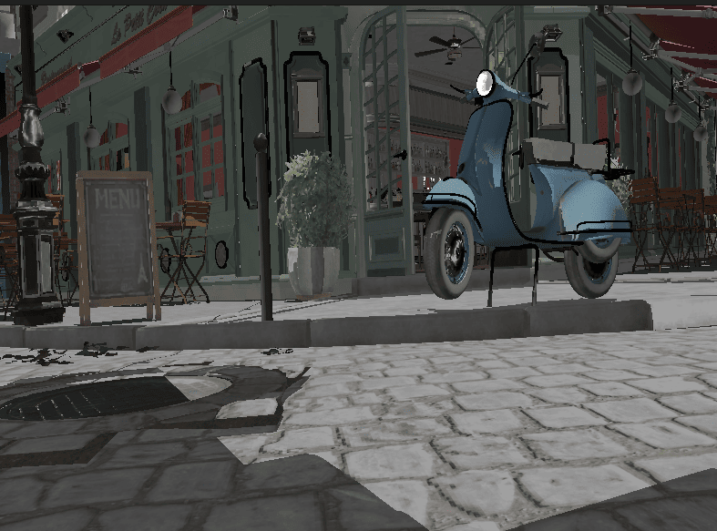

Lighting Models
In this section, we’ll explore various lighting models used in computer graphics, with a focus on understanding the concepts rather than implementation details. We’ll discuss how different lighting models simulate the interaction of light with surfaces, their advantages and limitations, and when to use each approach.
In this chapter, we’ll introduce Physically Based Rendering (PBR) and other lighting models. The concepts we cover here will be applied in later chapters, such as the Loading_Models chapter where we’ll use glTF, which uses PBR with the metallic-roughness workflow for its material system. By understanding the theory behind different lighting models, including PBR, we can better leverage the material properties provided by glTF models and extend our rendering capabilities.
Understanding Light-Surface Interaction
Before diving into specific lighting models, it’s important to understand how light interacts with surfaces in the real world:
-
Reflection: Light bounces off the surface
-
Absorption: Light is absorbed by the surface and converted to heat
-
Transmission: Light passes through the surface (for transparent materials)
-
Scattering: Light is scattered in various directions within the material
The way these interactions occur depends on the material properties and the characteristics of the light.
Types of Reflection
There are two main types of reflection:
-
Diffuse Reflection: Light is scattered in many directions, creating a matte appearance
-
Specular Reflection: Light is reflected in a specific direction, creating highlights
Most real-world materials exhibit a combination of diffuse and specular reflection.
The Evolution of Lighting Models
Lighting models in computer graphics have evolved significantly over time, each with their own approach to simulating light-surface interactions:
Early Lighting Models
Flat Shading
The simplest lighting model, where each polygon is assigned a single color based on its normal and the light direction. This creates a faceted appearance with visible polygon edges.
-
Advantages: Very fast to compute
-
Disadvantages: Unrealistic appearance, visible polygon edges
-
When to use: For very low-power devices or stylized rendering
Gouraud Shading
An improvement over flat shading, where lighting is calculated once per vertex and then interpolated across the polygon. This per-vertex approach is significantly faster than per-pixel calculations, but means specular highlights that should appear in the middle of a polygon can be missed entirely since they’re not present at any vertex.
-
Advantages: Smoother appearance than flat shading, still relatively fast
-
Disadvantages: Cannot accurately represent specular highlights due to vertex-level calculation
-
When to use: For low-power devices where Phong shading is too expensive
Phong Lighting Model
One of the most widely used traditional lighting models, developed by Bui Tuong Phong in 1975. When used with per-pixel shading (Phong Shading), normals are interpolated across the polygon and lighting is calculated for every pixel, providing much more accurate specular highlights than Gouraud’s per-vertex approach. The model calculates lighting using three components:
-
Ambient: A constant light level to simulate indirect lighting
-
Diffuse: Light scattered in all directions (using Lambert’s cosine law)
-
Specular: Shiny highlights (using a power function of the reflection vector and view vector)
Characteristics:
-
Advantages: Reasonably realistic for many materials, intuitive parameters, accurate specular highlights with per-pixel shading
-
Disadvantages: Not physically accurate, can look artificial under certain lighting conditions
-
When to use: For simple real-time applications where PBR is too expensive
For more information on the Phong lighting model, see the Wikipedia article.
Blinn-Phong Model
A modification of the Phong model by Jim Blinn that uses the halfway vector between the light and view directions instead of the reflection vector, making it more efficient to compute.
-
Advantages: Faster than Phong, similar visual results
-
Disadvantages: Still not physically accurate
-
When to use: As a more efficient alternative to Phong
Learn more about Blinn-Phong in this Wikipedia article or this GPU Gems chapter.
Advanced Lighting Models
Cook-Torrance Model
A more physically-based model developed by Robert Cook and Kenneth Torrance in 1982. It uses microfacet theory to model surface roughness and includes a more accurate specular term.
-
Advantages: More physically accurate than Phong or Blinn-Phong
-
Disadvantages: More complex to implement and compute
-
When to use: When you need more realistic materials but full PBR is too expensive
For more details, see the original Cook-Torrance paper.
Oren-Nayar Model
An extension of the Lambertian diffuse model that accounts for microfacet roughness in diffuse reflection, making it more suitable for rough surfaces like cloth, concrete, or sand.
-
Advantages: More realistic diffuse reflection for rough surfaces
-
Disadvantages: More expensive than Lambertian diffuse
-
When to use: For materials where diffuse roughness is important
Learn more in the original Oren-Nayar paper.
Physically Based Rendering (PBR)
PBR represents one of the most significant advancements in real-time graphics over the past decade. Unlike earlier ad-hoc shading models, PBR aims to simulate how light interacts with surfaces based on the principles of physics.
The key principles of PBR include:
-
Energy Conservation: A surface cannot reflect more light than it receives
-
Microfacet Theory: Surfaces are modeled as collections of tiny mirrors with varying orientations
-
Fresnel Effect: Reflectivity changes with viewing angle
-
Metallic-Roughness Workflow: Materials are defined by their base color, metalness, and roughness
Considerations for using PBR:
-
Advantages: Realistic results that remain consistent across different lighting conditions, intuitive parameters for artists
-
Disadvantages: More complex and computationally expensive
-
When to use: For modern games and applications where realism is important
For comprehensive information on PBR, see the Physically Based Rendering book.

Lighting Models in glTF
The glTF format uses PBR with the metallic-roughness workflow, which defines materials using these primary parameters:
-
Base Color: The albedo or diffuse color of the surface
-
Metallic: How "metal-like" the surface is (0.0 = non-metal, 1.0 = metal)
-
Roughness: How smooth or rough the surface is (0.0 = mirror-like, 1.0 = rough)
This workflow is intuitive for artists and efficient for real-time rendering. The glTF specification provides a standardized way to define PBR materials that can be used across different rendering engines.
For more information on the glTF PBR implementation, see the glTF 2.0 specification.
Light Types
Different lighting models can work with various types of light sources:
-
Point Lights: Light emanates in all directions from a single point.
-
Directional Lights: Light rays are parallel, as if coming from a very distant source (like the sun).
-
Spot Lights: Light is emitted in a cone shape from a point.
-
Area Lights: Light is emitted from a surface area.
-
Image-Based Lighting (IBL): Light is derived from an environment map, simulating global illumination.
Each type of light requires specific calculations for the light direction, attenuation, and other properties.
Advanced Lighting Techniques
Beyond basic lighting models, there are several advanced techniques that can enhance the realism of your rendering:
Global Illumination
Global Illumination (GI) simulates how light bounces between surfaces, creating indirect lighting effects. Techniques include:
-
Radiosity: Calculates diffuse light transfer between surfaces
-
Path Tracing: Traces light paths through the scene
-
Photon Mapping: Stores light information in a spatial data structure
For more information, see this GPU Gems chapter on radiosity.
Subsurface Scattering
Subsurface Scattering (SSS) simulates how light penetrates and scatters within translucent materials like skin, wax, or marble.
For more information, see this GPU Gems chapter on subsurface scattering.
Ambient Occlusion
Ambient Occlusion (AO) approximates how much ambient light a surface point would receive, darkening corners and crevices.
For more information, see this GPU Gems chapter on ambient occlusion.
Choosing the Right Lighting Model
When deciding which lighting model to use for your application, consider:
-
Hardware Constraints: More complex models require more processing power
-
Visual Requirements: How realistic do your materials need to look?
-
Artist Workflow: Some models are more intuitive for artists to work with
-
Consistency: PBR provides more consistent results across different lighting conditions
For our engine, we’ll leverage the PBR implementation from the glTF format, as it provides a good balance of realism, performance, and artist-friendly parameters.
Further Reading
To deepen your understanding of lighting models, here are some valuable resources:
-
Physically Based Rendering: From Theory to Implementation - The definitive book on PBR
-
LearnOpenGL PBR Tutorial - An accessible introduction to PBR concepts
-
Filament Material System - Google’s real-time PBR rendering engine documentation
-
glTF 2.0 Material Specification - Details on how PBR is implemented in glTF
-
GPU Gems: Materials - Collection of articles on advanced material rendering
In the next section, we’ll explore how to use push constants to efficiently pass material properties to our shaders.